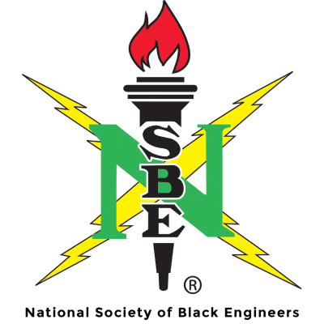

Candidate for 2026-2027 NSBE National Chairperson
Leadership that listens and builds sustainable direction so that we ACE the future of NSBE.
My name is Casey Williams II, and I am an Industrial Engineering student at Purdue University
who believes deeply in service, community, and leadership that gives more than it takes.
At Purdue, I have found my home in organizations that emphasize brotherhood, accountability,
and collective progress. As a member of Kappa Alpha Psi Fraternity, Inc. and through my
involvement within the NPHC community, I have learned what it means to lead with integrity,
show up consistently for others, and build something larger than myself. Those experiences
have shaped how I approach leadership: grounded in responsibility, respect, and
follow-through.
My perspective is also shaped by my family. I was raised by an educator mother who taught me the
power of access and opportunity, and an engineer father who instilled in me the importance of
problem-solving, structure, and long-term thinking. As the older brother to my younger sister,
I am constantly reminded that the decisions we make today create the environments others will
inherit tomorrow. That understanding informs how I think about leadership, sustainability, and
the responsibility we carry to those who come after us.
These experiences have guided how I serve within NSBE. I lead by listening, aligning people and
processes, and committing to solutions that last beyond a single moment or term. As a candidate
for National Chairperson, I am focused on strengthening the NSBE experience for our entire family
where applicable, while ensuring our Society remains grounded in community, purpose, and
progress.
Thank you for your interest in my campaign, and I look forward to the opportunity to learn and build
with you.
Greetings, NSBE Family,
For 51 years, our Society has existed because students dared to build something greater than
themselves. The Chicago Six formed The National Society of Black Engineers so that Black engineers
could access opportunity,
connection, and community at a time when none of those things were guaranteed.
Today, as our organization approaches a new chapter, we face a familiar challenge:
Are we prepared to serve the students of today and the generations to come?
The ACE Platform is a blueprint for a NSBE that is stronger, more
aligned, more modern, and more member-centered.
ACE modernizes our systems.
ACE unites our chapters and our leaders.
ACE elevates our members and our mission.
Together, we will ACE the next chapter of NSBE’s history.
Warmly,
Casey Williams II
Access is foundational to equity and empowerment. NSBE must provide consistent systems and support so chapters, leaders, and members can focus on impact rather than navigation.
NSBE functions best when leadership, timelines, and priorities are clearly aligned. Connection strengthens trust, execution, and continuity across the Society.
Elevation ensures NSBE’s mission endures beyond any single term. We must intentionally develop leaders, strengthen advocacy, and plan for the future—and start early.
Feel free to reach out with any questions!
Socials & Resume
Follow along and stay connected.